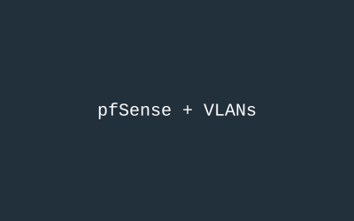
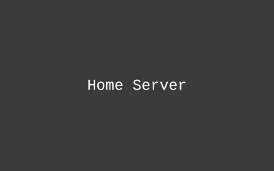

Projects

Enterprise Edge Firewall & VLAN Segmentation (Home Lab)
Set up pfSense as a virtualized edge firewall to handle routing, DHCP, and stateful packet inspection, then segmented my home network into isolated VLANs for management, guests, and IoT devices to put what I've been learning for the CCNA into practice.
See more
SOHO Home Network & Privacy Gateway (Home Lab)
Rebuilt my home network's routing and DNS from scratch: static IPs and custom NAT/port forwarding on my AT&T gateway, a Pi-hole DNS sinkhole on a Raspberry Pi to block ads and malicious domains network-wide, and a VPN gateway for secure remote access.
See more
Automated Home Server
Built and maintain a home server running several self-hosted services with automated backups and monitoring.
See more
Legacy Code Refactoring
Refactored a legacy production codebase at Paycom, improving maintainability and test coverage without disrupting existing functionality.
See more